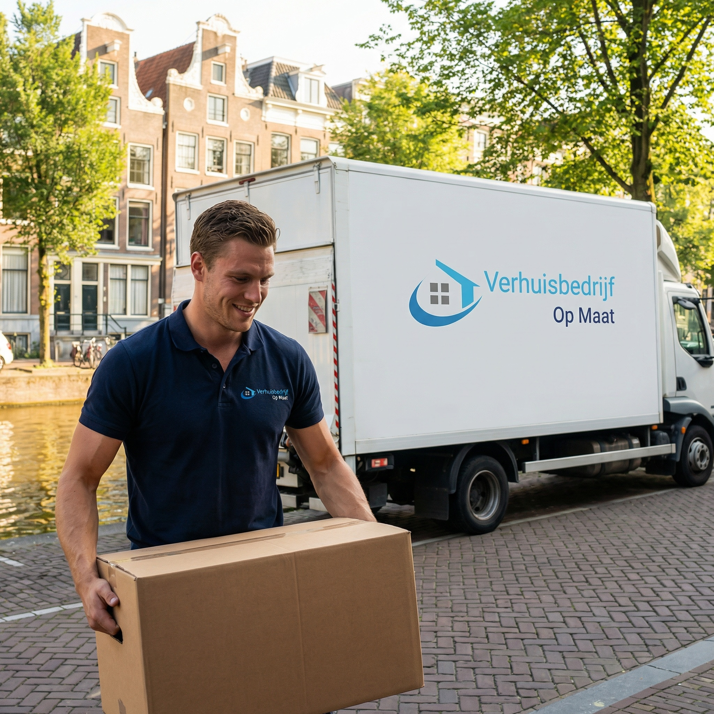
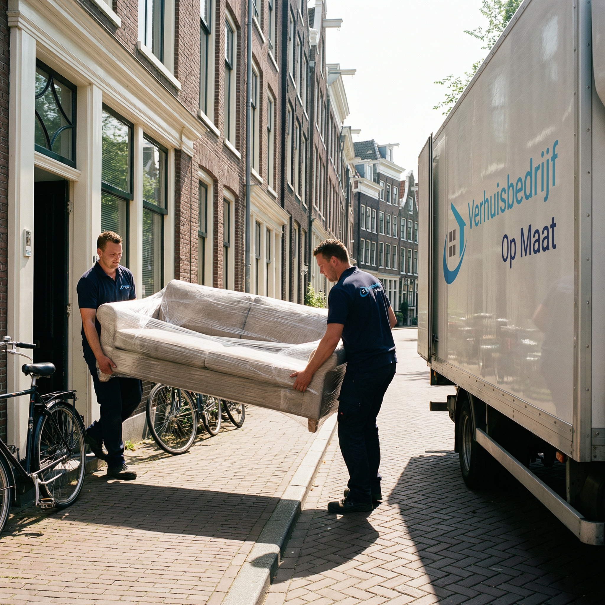
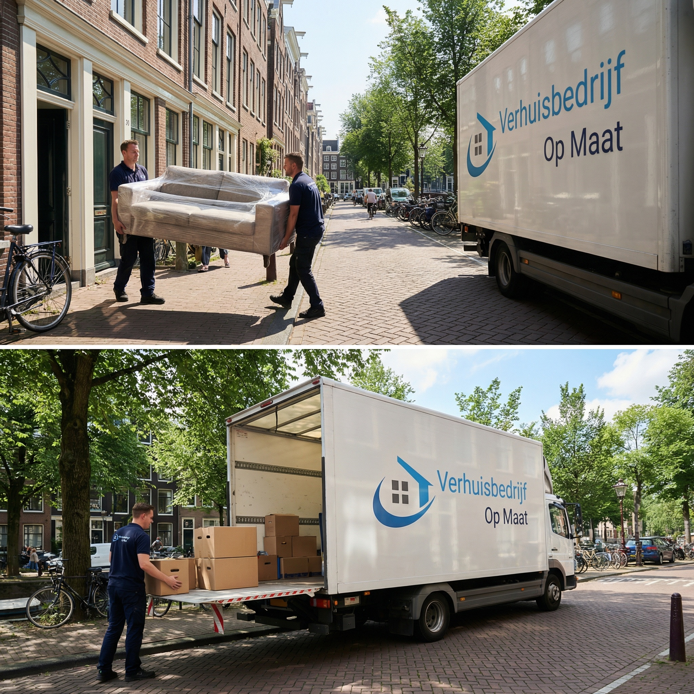

Verhuisbedrijf Amsterdam
Verhuizen in Amsterdam met lokale kennis: grachtenpanden, verhuisliften en parkeerontheffingen. Beoordeeld met een 9+/10.
Geen verplichtingen · Reactie binnen 2 uur

Verhuisbedrijf met 20+ jaar ervaring in Amsterdam
Amsterdam stelt verhuizers voor uitdagingen die u nergens anders tegenkomt: smalle grachtenpanden uit de 17e eeuw, steile trappen met haakse bochten en straten waar parkeren zonder ontheffing ondenkbaar is. Verhuisbedrijf Op Maat kent die realiteit. Wij verhuizen al meer dan 20 jaar in alle Amsterdamse wijken, van de Jordaan en De Pijp tot Oud-Zuid, Oost, Noord en Centrum. Ons team weet precies welke straten een verhuislift vereisen, waar de parkeerdruk het hoogst is en hoe de gemeente omgaat met ontheffingen. Of u nu een particuliere verhuizing plant of een bedrijfsverhuizing, wij leveren lokale expertise.
- 500+ verhuizingen per jaar in de regio Amsterdam
- Lokale kennis van parkeerregels en ontheffingen
- Verhuisliften voor grachtenpanden en smalle trappenhuizen
Verhuizen in Amsterdam vraagt om specialisten
Ontdek waarom meer dan 1.000 klanten ons een 9+ beoordeling geven
Grachtenpand-specialist
Ervaren in het verhuizen van smalle trappenhuizen, hijsbalken en 17e-eeuwse panden in het centrum.
All-in prijzen
Transparante tarieven inclusief verhuislift, parkeerontheffing en materialen. Geen verborgen kosten.
Snel en flexibel
Verhuizingen 7 dagen per week, ook op korte termijn. Spoedverhuizing binnen 24-48 uur mogelijk.
Gratis materialen
Verhuisdozen, dekens, krimpfolie en tape zijn bij elke verhuizing inbegrepen.
Vaste verhuizers, 20+ jaar ervaring
Ons vaste team kent Amsterdam op straatniveau en werkt met zorg en respect.
9+ beoordeling
Meer dan 1.000 tevreden klanten geven ons een uitstekende score op Google.

Verhuizen waar anderen het laten afweten
Amsterdamse grachtenpanden hebben trappen met een stijgingspercentage van soms meer dan 60 graden. Meubels zoals driezitsbanken, bedkasten en wasmachines passen daar niet doorheen. Ons team werkt dagelijks met deze situaties. Wij beoordelen vooraf of uw meubels via het trappenhuis kunnen, of dat een verhuislift via het raam nodig is. Bij panden met een hijsbalk takelen wij zware stukken vakkundig omhoog. Bij herenhhuizen in Oud-Zuid of nieuwbouwappartementen in IJburg passen wij onze aanpak aan op de specifieke situatie.
- Verhuislift (ladderlift) tot 30 meter hoogte beschikbaar
- Takelen via hijsbalk bij monumentale grachtenpanden
- De- en montage van kasten, bedden en keukens ter plaatse

Wij regelen de logistiek, u hoeft alleen te verhuizen
Parkeren in Amsterdam is een operatie op zich. In wijken als De Pijp, Centrum en de Jordaan is het vrijwel onmogelijk om zonder ontheffing een verhuiswagen te plaatsen. Wij begeleiden u bij de aanvraag van een parkeerontheffing bij de gemeente Amsterdam, minimaal 4 werkdagen van tevoren. Daarnaast voldoen al onze verhuiswagens aan de eisen van de Amsterdamse milieuzone, zodat u zich geen zorgen hoeft te maken over boetes of toegangsproblemen. Bereken alvast uw verhuisvolume met onze M3 calculator voor een snelle indicatie.
- Hulp bij aanvraag parkeerontheffing gemeente Amsterdam
- Alle verhuiswagens voldoen aan milieuzone-eisen
- Kennis van laad- en losplekken in elke wijk
- Routekennis: snel en efficient door de stad
Verhuizing in Amsterdam gepland? Wij regelen alles.
Ontvang binnen 24 uur een vrijblijvende offerte op maat, inclusief verhuislift en ontheffing.
Geen verplichtingen · Reactie binnen 2 uur
- ✓ Gratis taxatie aan huis
- ✓ All-in prijzen
- ✓ 20+ jaar ervaring in Amsterdam

Van Jordaan tot IJburg, van Noord tot Amstelveen
Elke Amsterdamse wijk heeft eigen kenmerken. In de Jordaan en het Centrum werken wij met smalle verhuiswagens die door de nauwe straten passen. In De Pijp staan onze verhuizers vroeg op om voor de markt op de Albert Cuypstraat te laden. In Oud-Zuid verhuizen wij regelmatig grote herenhhuizen met 4-5 verdiepingen, waar de volledige inboedel via een verhuislift naar beneden gaat. In Nieuw-West en Oost zijn de woningen doorgaans beter toegankelijk, maar is de parkeerdruk hoog. IJburg en Zuidas kenmerken zich door nieuwbouwappartementen met ruime liften en ondergrondse parkeergarages, wat het verhuisproces versnelt.
- Jordaan, De Pijp, Centrum: smalle straten, verhuislift standaard
- Oud-Zuid, Zuidas: herenhhuizen en luxe appartementen
- Noord, Oost, Nieuw-West: goede bereikbaarheid, hoge parkeerdruk
- IJburg, Amstelveen: nieuwbouw met ruime liften en garages
Zo verloopt uw verhuizing in Amsterdam
Contact
Bel, mail of vul het offerteformulier in voor een vrijblijvend adviesgesprek
Taxatie
Gratis inventarisatie bij u thuis, inclusief beoordeling trap- en liftsituatie
Planning
Wij regelen parkeerontheffing, verhuislift en materialen
Verhuisdag
Ons team verhuist u snel en zorgvuldig, van inpakken tot plaatsen
Nazorg
Meubels op hun plek, dozen uitgepakt en materiaal opgehaald
Elk type woning, een passende aanpak
Van een studentenkamer in Oost tot een herenhuis aan de Vondelstraat
Amsterdam telt meer dan 450.000 woningen, verdeeld over tientallen woningtypen. Elk type vraagt een andere benadering. Bij grachtenpanden schatten wij vooraf in of meubels via de trap of het raam moeten. Bij herenhhuizen in Oud-Zuid werken wij met 3-4 verhuizers en een grote verhuiswagen. Bij nieuwbouw in IJburg en Zuidas profiteren wij van ruime liften en brede gangen, waardoor de verhuizing gemiddeld 30% sneller verloopt dan in het centrum. Voor portiekwoningen in Nieuw-West, Oost en Noord beoordelen wij of de liften groot genoeg zijn voor uw meubels, of dat wij het trappenhuis moeten gebruiken.
Wij bieden zowel particuliere verhuizingen als bedrijfsverhuizingen in heel Amsterdam. Bekijk onze tarieven voor een indicatie, of gebruik de M3 calculator om uw verhuisvolume te berekenen.
Wat kost verhuizen in Amsterdam?
De kosten van een verhuizing in Amsterdam worden bepaald door vier factoren: het volume van uw inboedel (in m3), de verdieping en trapsituatie, of er een verhuislift nodig is en de afstand naar uw nieuwe woning. Een 2-kamerappartement op de 2e verdieping van een grachtenpand met verhuislift kost meer dan dezelfde verhuizing vanuit een begane grondwoning in IJburg. Bij Verhuisbedrijf Op Maat werken wij met vaste all-in prijzen. Onze taxateur komt gratis bij u langs, beoordeelt de situatie ter plaatse en stelt een definitieve offerte op. De prijs die wij afspreken is de prijs die u betaalt, inclusief verhuizers, wagen, materialen, verhuisdozen en eventuele verhuislift.
Wij geven u na de taxatie een gedetailleerde offerte met een opsplitsing van alle kosten. Geen kleine lettertjes, geen toeslag voor brandstof of een extra rit. Verhuisdozen leveren wij gratis en halen wij na de verhuizing weer op. Bekijk onze tarievenpagina voor standaardprijzen en voorbeeldberekeningen.
Verhuistips specifiek voor Amsterdam
Verhuizen in Amsterdam vergt goede voorbereiding. Hieronder delen wij onze belangrijkste adviezen, gebaseerd op meer dan twee decennia ervaring in de stad.
- Parkeerontheffing: Vraag minimaal 4 werkdagen van tevoren een ontheffing aan via amsterdam.nl. In drukke wijken als de Jordaan en De Pijp is dit niet optioneel maar een vereiste. Wij helpen u met de aanvraag.
- Verhuislift reserveren: In 60-70% van de verhuizingen in de binnenstad is een verhuislift nodig. Reserveer deze minimaal 2 weken van tevoren, zeker in drukke periodes.
- Verhuisdag kiezen: De 1e en 15e van de maand zijn piekdagen in Amsterdam. Verhuizen op een dinsdag of woensdag midden in de maand bespaart wachttijd en soms geld.
- Milieuzone: Controleer of uw eigen busje aan de milieueisen voldoet als u deels zelf verhuist. Onze wagens zijn altijd toegelaten.
- Inplannen: Reserveer 3-4 weken van tevoren, en 6-8 weken bij verhuizingen in juni, juli of augustus.
Wat onze klanten zeggen
Meer dan 1000 tevreden klanten gingen u voor.
"Perfect en snelle service. Communicatie uitstekend en gaan heel zorgvuldig en netjes om met je spullen. TOP BEDRIJF EN TOP TEAM!!!"
"Hele fijne contact gehad met Ricardo. Vanaf het eerste telefoontje tot aan de laatste meubel die netjes en geseald werd gebracht. Zeker aanraders!"
"Wat een goede service! Begon al met het eerste contact via Ricardo, echt een vriendelijke kerel. Benny en Ibrahim zijn harde werkers. De service is echt super!"
"Ik kan dit verhuisbedrijf van harte aanbevelen! De verhuizers werkten zeer hard en gingen met de grootste zorg om met onze spullen."
"Perfect verhuisbedrijf! Heel professioneel, klantgericht en vriendelijk! Ik heb alleen maar positieve ervaringen!"
"De verhuizing werd volledig verzorgd. Drie verhuizers werkten ontzettend hard en alles zonder beschadigingen. Kwetsbare spullen werden netjes geseald."
Alles over verhuizen in Amsterdam
Hoe regel ik een parkeerontheffing voor mijn verhuizing in Amsterdam?
U vraagt een parkeerontheffing aan bij de gemeente Amsterdam via amsterdam.nl, minimaal 4 werkdagen van tevoren. Geef de exacte locatie, datum en tijdstip op. Wij helpen u met de aanvraag en zorgen voor de juiste locatiebepaling, zodat onze verhuiswagen zo dicht mogelijk bij uw woning staat. De kosten van de ontheffing rekent de gemeente rechtstreeks af.
Kan ik een verhuislift gebruiken bij een grachtenpand?
Ja, bij grachtenpanden waar het trapgat te smal is voor meubels zetten wij een verhuislift (ladderlift) in. Deze hijst meubels, wasmachines en kasten via het raam naar binnen of buiten. Onze liften reiken tot 30 meter hoogte. Wij regelen de lift, inclusief plaatsing en bediening. Bij panden met een hijsbalk bieden wij ook de mogelijkheid om via touw en katrol te takelen.
Wat kost verhuizen in Amsterdam?
De kosten hangen af van het volume (m3), de verdieping, of er een verhuislift nodig is en de afstand naar uw nieuwe woning. Een 2-kamerappartement op de 3e verdieping van een grachtenpand kost gemiddeld meer dan een begane grondwoning in IJburg. Na een gratis taxatie bij u thuis ontvangt u een vaste all-in prijs, zonder verborgen kosten. Bekijk onze tarievenpagina voor indicaties.
Hoe zit het met de milieuzone in Amsterdam?
Amsterdam hanteert een milieuzone voor het centrum en een groot deel van de stad. Oudere dieselvoertuigen mogen deze zone niet in. Onze verhuiswagens voldoen aan de emissie-eisen en rijden probleemloos het centrum in. Als u zelf een busje huurt voor een deel van de verhuizing, controleer dan of dat voertuig is toegelaten.
Hoe verhuizen jullie in panden zonder lift en met smalle trappen?
Onze verhuizers zijn getraind in het werken met smalle, steile trappen. Waar het trapgat te krap is voor grote meubels, gebruiken wij een verhuislift via het raam. Grote stukken die niet door de deur of het trapgat passen, takelen wij vakkundig op via de hijsbalk. Wij beoordelen dit altijd vooraf tijdens de gratis taxatie, zodat u op de verhuisdag niet voor verrassingen staat.
Hoe ver van tevoren moet ik mijn verhuizing in Amsterdam inplannen?
Wij adviseren minimaal 3-4 weken van tevoren te reserveren. In de zomermaanden (juni t/m augustus) en rond de 1e van de maand is de vraag het hoogst. Plan dan 6-8 weken vooruit. Voor een spoedverhuizing staan wij binnen 24-48 uur klaar. Neem zo snel mogelijk contact op voor beschikbaarheid.
Onze diensten in Amsterdam
Naast verhuizingen helpen wij u ook met deze diensten

Particuliere verhuizing
Verhuizen van uw woning met gratis verhuisdozen, professionele inpak en all-in prijs.
Meer informatie →
Bedrijfsverhuizingen
Minimale downtime voor uw bedrijf. Wij verhuizen kantoren, winkels en praktijken in Amsterdam.
Meer informatie →
Spoedverhuizing
Onverwacht snel moeten verhuizen? Wij staan binnen 24 uur klaar, 7 dagen per week.
Meer informatie →Gratis offerte aanvragen
Vul het formulier in en ontvang binnen 24 uur een vrijblijvende offerte voor uw verhuizing in Amsterdam.
Bedankt voor uw aanvraag!
Wij hebben uw aanvraag in goede orde ontvangen. Binnen 24 uur nemen wij contact met u op.